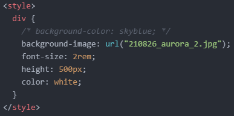

- 'Background(배경)' 속성에 대해 알아보기
오늘은 background 속성에 대해 알아보려고 합니다.
이름에서 알 수 있듯, 배경을 꾸며주는 속성입니다.
우선 다음과 같이 텍스트만 있는 코드를 작성해 줍니다.
첫 번째로 배경의 색상을 지정해 보겠습니다.
이때는 'background-color: 색상;'을 선언하면 됩니다.
저는 다음과 같이 하늘색으로 지정해 보았습니다.
이번에는 색상으로 배경을 채우는 대신, 이미지로 배경을 채워 보겠습니다.
잠시 'background-color' 속성을 주석 처리해 주고 'background-image: url("이미지 파일명");'을 선언해 줍니다.
그럼, 텍스트 영역의 크기에 맞게 이미지가 배경으로 삽입되기 때문에 이미지가 잘리는 현상을 확인할 수 있습니다.
텍스트의 크기를 늘리든지, 요소의 높이를 키우든지, 아니면 다음과 같이 둘 다 늘리든지 해서 원하는 이미지 크기를 만들어주면 됩니다.
물론, 색상과 이미지를 동시에 사용할 수도 있습니다.
하지만 이때는 이미지의 배경이 투명해야 합니다.
다음 사진과 같이 말이죠. (사진 보기)
그럼 주석을 해제하고 하늘색 배경과 이미지를 합쳐보겠습니다.
어떤가요, 예쁘죠?
이번에는 작은 달을 배경으로 삽입해 보겠습니다.
그럼 이미지가 중복으로 적용되는 동시에 요소의 높이에 따라 이미지가 잘리는 것을 알 수 있습니다.
그 이유는 이미지가 크든 작든 상관없이 'background-repeat: repeat;' 선언이 되어있기 때문입니다.
큰 이미지는 보통 공간을 많이 차지하기 때문에 한 번만 적용되는 것처럼 보이지만, 더 큰 화면에서 보면 중복으로 적용되는 것을 알 수 있습니다.
이 중복을 없애고 싶으면, 'background-repeat: no-repeat;' 선언을 하면 됩니다.
만약, 가로 방향으로만 혹은 세로 방향으로만 중복을 적용하고 싶다면 'background-repeat: repeat-x;' 혹은 'background-repeat: repeat-y;' 선언을 하면 됩니다.
이번에는 아주 긴 텍스트를 적용해 보겠습니다.
여기서 스크롤을 내려보면 이미지도 같이 사라지는 것을 알 수 있습니다.
어쩌면 당연한 것이고, 이것이 기본 설정입니다.
그런데, 해당 이미지가 스크롤을 내려도 고정되게 만들 수 있습니다.
이럴 땐 'background-attachment: fixed;' 선언을 하면 됩니다.
참고로, 'background-attachment: scroll;' 선언이 기본으로 적용되어 있습니다.
그럼 위와 같이 스크롤을 내려도 달은 고정되어 있는 것을 알 수 있습니다.
이번에는 배경 이미지의 사이즈를 조정해 보겠습니다.
이때는 'background-size: 너비 폭;' 선언을 하면 됩니다.
이 속성을 알면 위에서 작은 달을 삽입할 필요가 없습니다.
'background-repeat: no-repeat;' 선언을 'repeat'로 바꿔주면 아래와 같은 결과가 나오게 됩니다.
이 'background-size' 속성은 또 다른 속성값으로 'cover'와 'contain'을 가지고 있습니다.
두 속성값의 차이를 설명하기 위해 아까 위에서 얻은 결과물을 가져와 보겠습니다.
먼저, 이 결과물에 'background-size: contain;' 선언을 해보겠습니다.
보다시피 이미지의 크기가 요소의 높이에 맞게 조정되는 것을 알 수 있습니다.
또한, 'background-repeat: no-repeat;' 선언을 하지 않았기 때문에 이미지가 중복 적용되는 것도 알 수 있습니다.
그럼 이번에는 'background-size: cover;' 선언을 해보겠습니다.
보다시피 이미지가 가운데로 정렬되면서 본래 이미지 크기에 맞게 적용되는 것을 알 수 있습니다.
이때 이미지 아랫부분이 잘리는 것은 요소의 높이를 500px로 지정해놓았기 때문입니다.
마지막으로 배경 이미지의 위치를 조정해 보겠습니다.
이때는 'background-position' 속성을 이용하면 됩니다.
배경 이미지는 기본적으로 'background-position: left top;' 선언이 적용되어 있습니다.
이 속성값을 'right-top'으로 바꿔주면 우측 상단에 이미지가 정렬될 것이고, 'center-bottom'으로 바꿔주면 중앙 하단에 이미지가 정렬될 것입니다.
저는 화면 정중앙에 이미지를 적용시켜 보겠습니다.
오늘은 여기까지 하겠습니다.
그럼 내일도 화이팅!